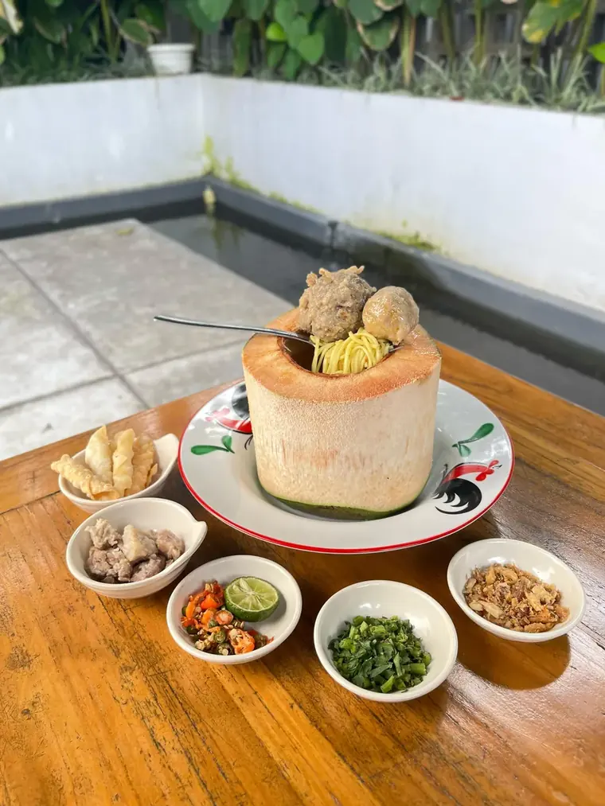
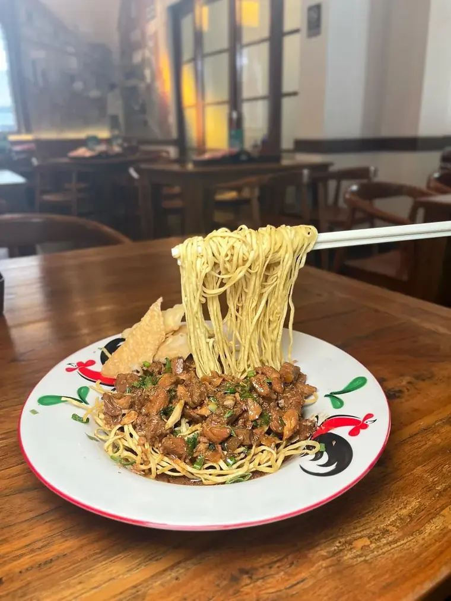
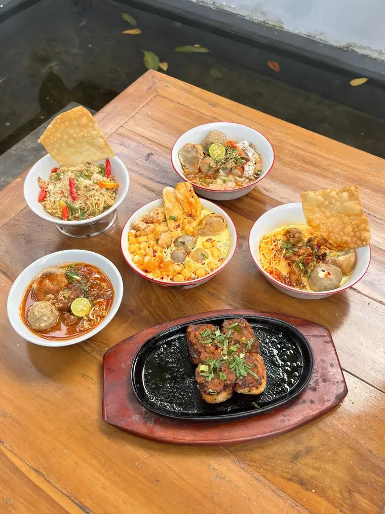
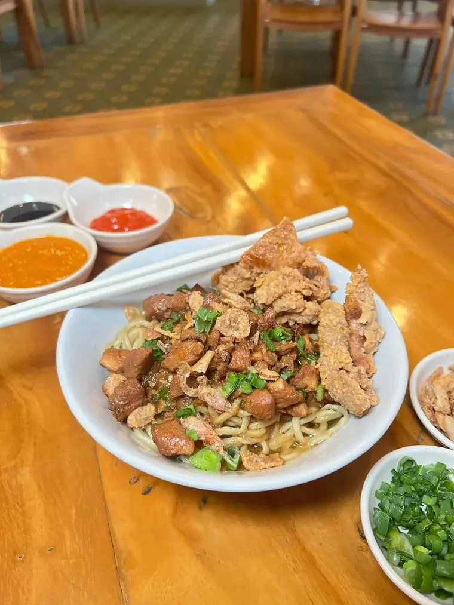
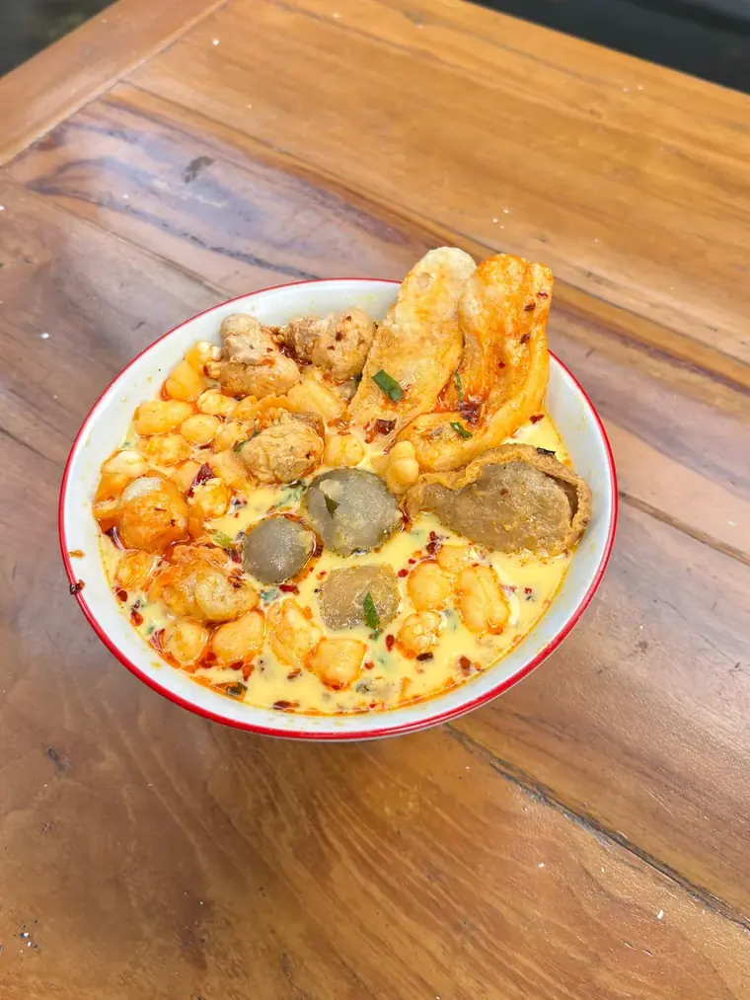

Bakso Kasmaran — Bakso Dulu Baru Kamu
★★★★★
4,9
·
ulasan Google
Buka 07.00–19.00





Yang paling sering dipesan di Kasmaran
Pesan lewat WhatsApp
Bungkus, gofood-in sendiri, atau tanya-tanya dulu
Lihat Menu Kasmaran
Bakso Kelapa, Sate Jando, Soto Tangkar & kawan-kawan
Lokasi & Ulas di Google
Jl. Kalimantan No. 5, Merdeka, Bandung
TikTok @bakso.kasmaran
Menu baru, dapur, dan kelakuan pelanggan